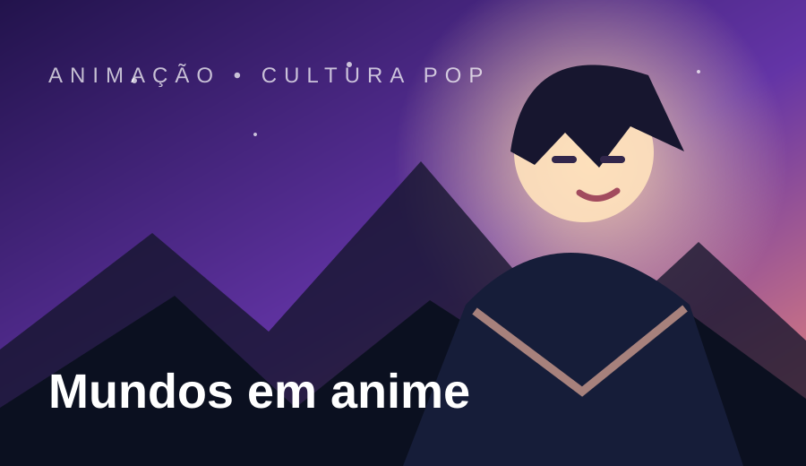
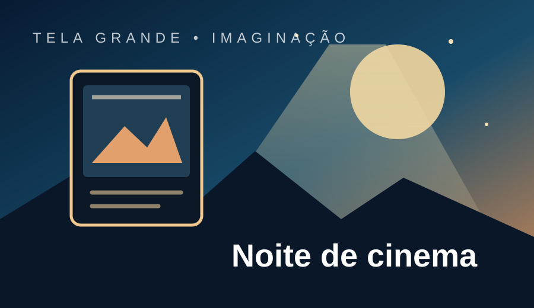
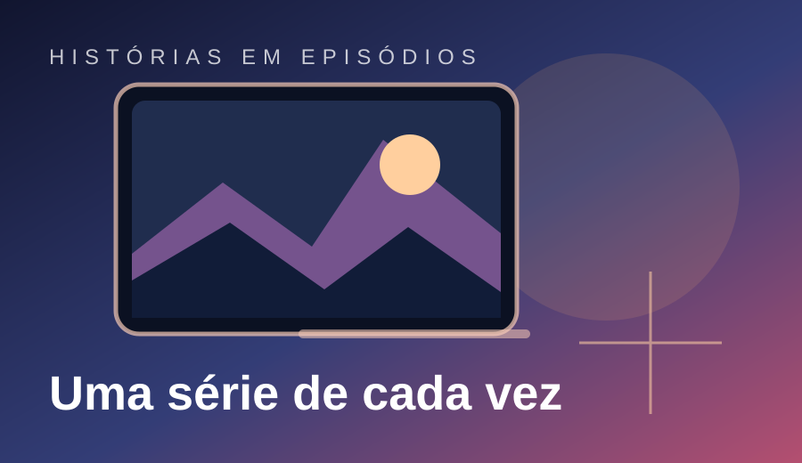
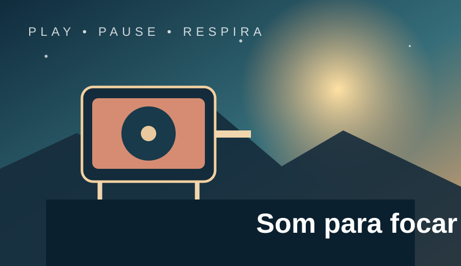
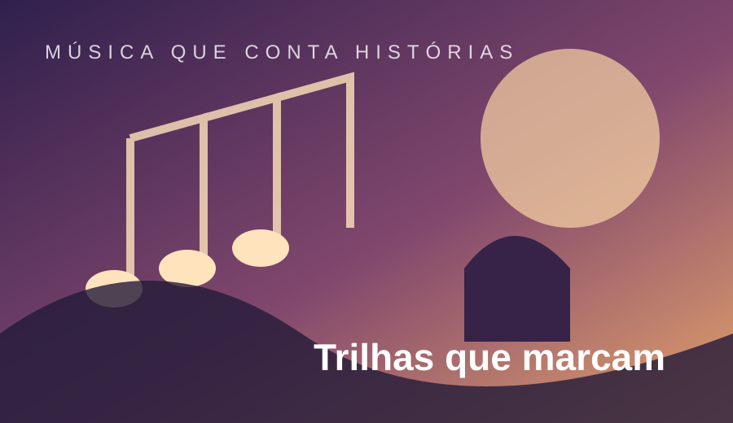
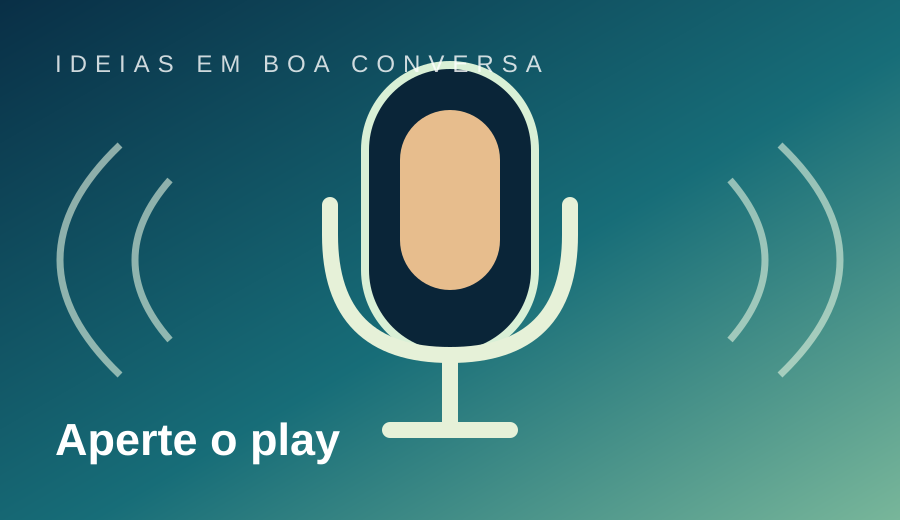
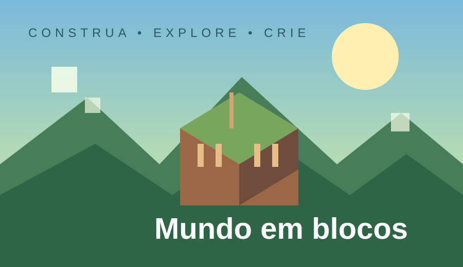

Personagens marcantes, jornadas emocionantes e estilos visuais que tornam cada história única.
Fonte da imagem: ilustração autoral em SVG.
Explorar animesUM UNIVERSO DE POSSIBILIDADES
Um espaço para descobrir histórias, encontrar novos sons e explorar mundos digitais. Três caminhos diferentes, reunidos em um só lugar.
Curadoria de Luigy Renan · ETEC · Agenda 13 — Desenvolvimento de Sistemas I
Narrativas que transportam para outros mundos, épocas e possibilidades.

Personagens marcantes, jornadas emocionantes e estilos visuais que tornam cada história única.
Fonte da imagem: ilustração autoral em SVG.
Explorar animes
Do suspense à ficção científica, o cinema transforma ideias em experiências inesquecíveis.
Fonte da imagem: ilustração autoral em SVG.
Conhecer catálogo
Histórias divididas em episódios para acompanhar no próprio ritmo e sempre querer saber mais.
Fonte da imagem: ilustração autoral em SVG.
Ver opçõesTrilhas para acompanhar a rotina e conversas que despertam curiosidade.

Batidas leves e atmosferas tranquilas para estudar, criar projetos ou simplesmente relaxar.
Fonte da imagem: ilustração autoral em SVG.
Ouvir no Spotify
Músicas de animes e games que dão identidade às cenas e continuam na memória depois dos créditos.
Fonte da imagem: ilustração autoral em SVG.
Descobrir músicas
Conteúdos em áudio sobre tecnologia, criatividade e assuntos que ajudam a enxergar novas perspectivas.
Fonte da imagem: ilustração autoral em SVG.
Explorar podcastsExperiências interativas, criatividade e novidades do universo digital.

Um mundo aberto em que construir, explorar e inventar são parte da mesma aventura.
Fonte da imagem: ilustração autoral em SVG.
Visitar MinecraftJogos de diferentes estilos combinam desafio, estratégia e experiências para jogar sozinho ou com amigos.
Fonte da imagem: ilustração autoral em SVG.
Explorar gamesInovação, inteligência artificial e ferramentas digitais mostram como a tecnologia muda a forma de criar.
Fonte da imagem: ilustração autoral em SVG.
Ler sobre tecnologia